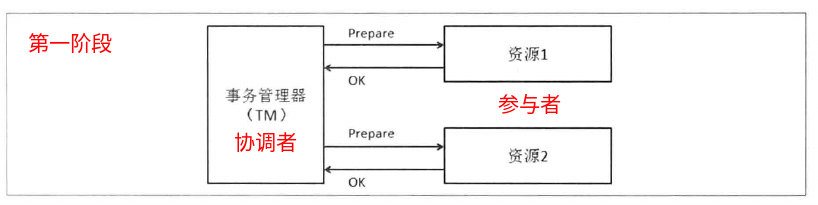
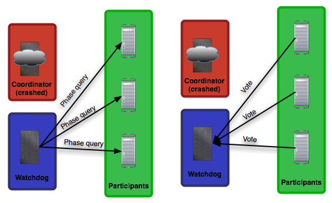
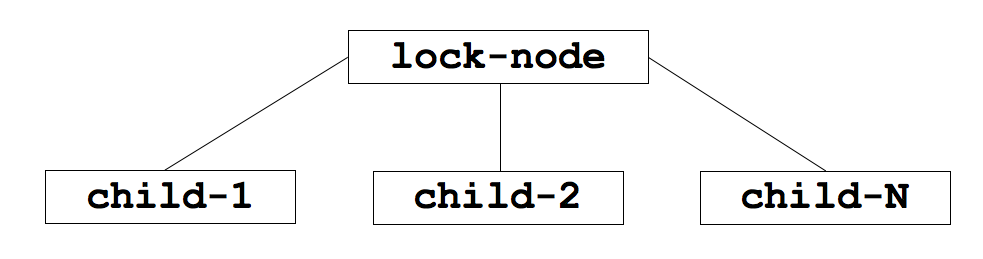
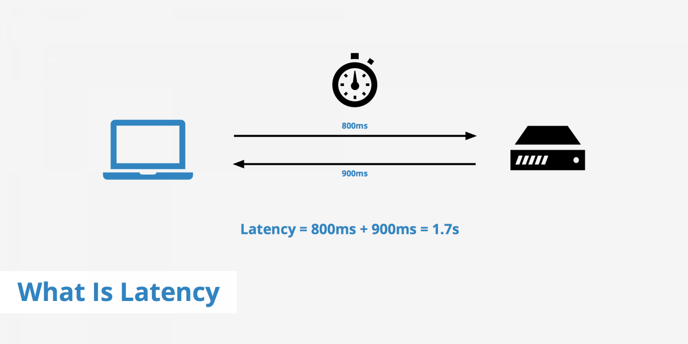
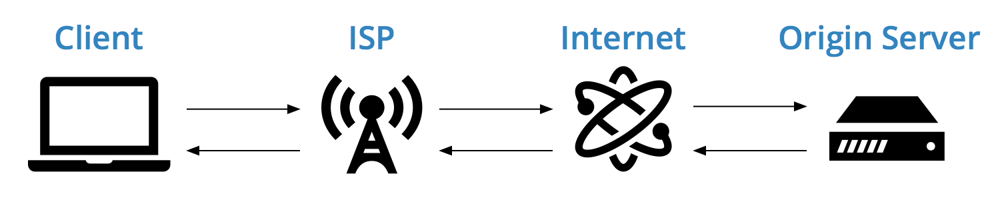
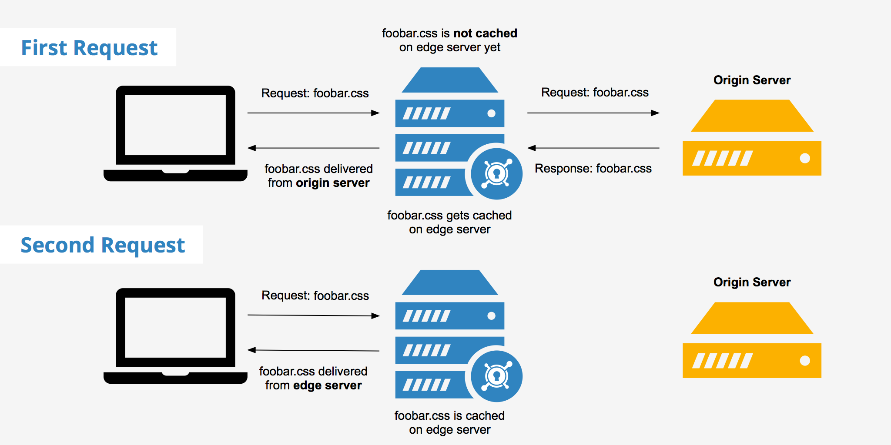
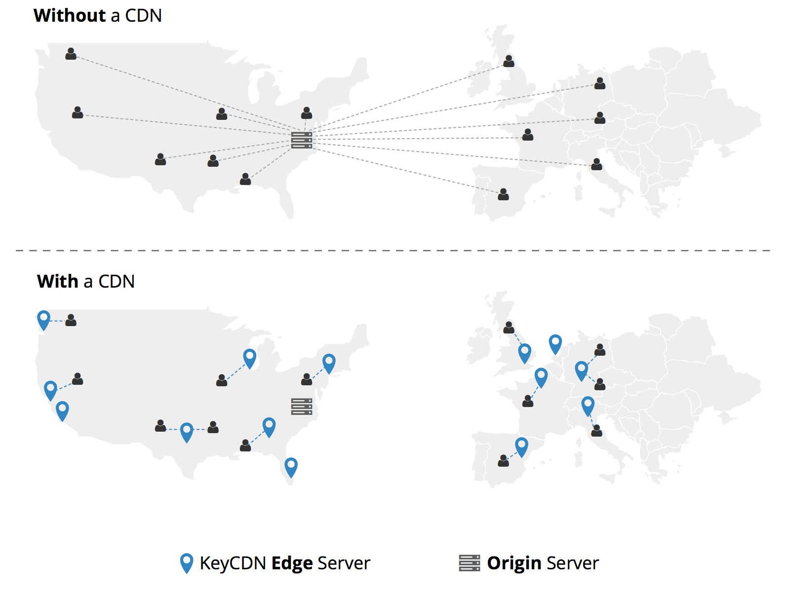
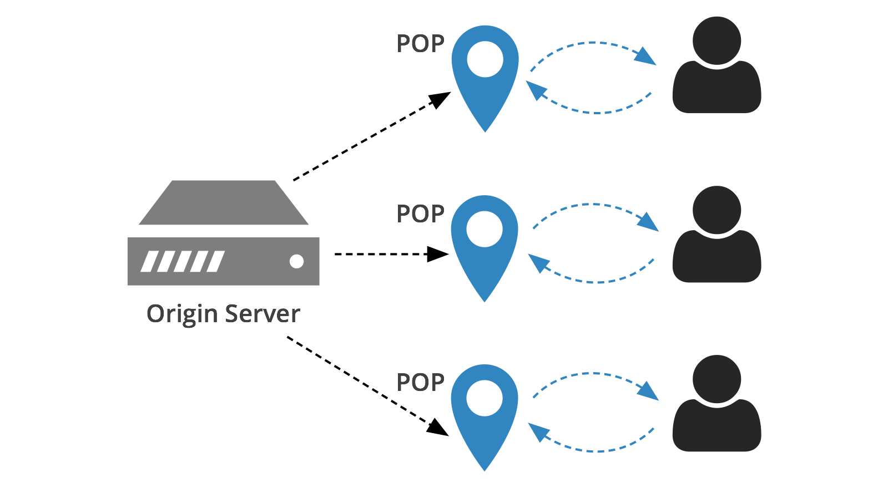
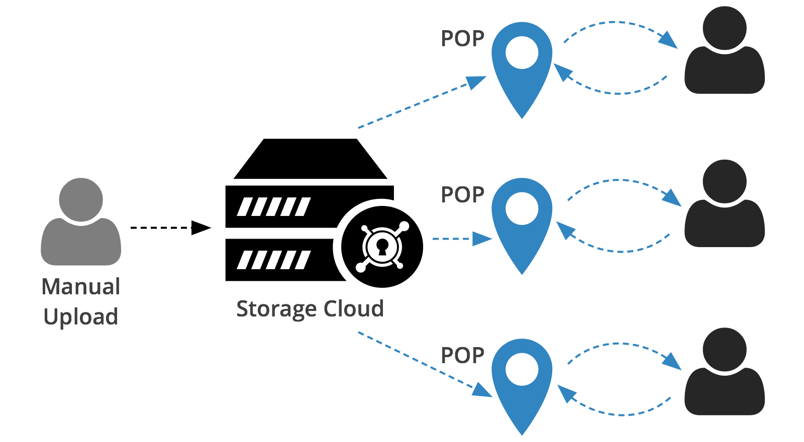
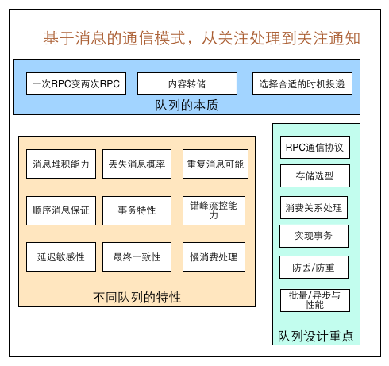

该理论以三位作者 Fischer, Lynch 和 Patterson 命名，假设节点只能是因为自身 crashing 而导致失败，网络是可靠的，消息延迟没有上界。在这样的假设下，有结论: 在异步通信场景中，即使最多只有一个进程失败，即使消息永远不丢失，也没有一种算法能保证失败的进程达到一致性。
上述三部分只有两种能在同一时间满足。我们能够得到三种系统类型:
CA 和 CP 系统是强一致性: 它们两个不同的是 CA 不能容忍任何节点失败，CP 可以在 2f + 1 个节点中可以容忍最多 f 次失败。原因是很简单的: CA 系统对节点失败和网络失败没有做区分，因此不得不停止决定。CP 系统只需大多数满足即可。
从 CAP 理论中我们可以得到四个结论:
一致性模型可以分为两类: 强一致性和弱一致性模型。强一致性保证透明的顺序和更新的可见性，弱一致性没有这种强制。
我们在单库上完成相关的数据操作后，就会直接提交或者回滚，而在分布式系统中，在提交之前增加了准备阶段，所以称之为两阶段提交。

在准备阶段有一个资源失败，那么在第二个阶段的处理就是回滚所有资源:
协调者挂掉了:

二阶段提交的核心问题在于，一旦决策已经制定，并且有一些参与者已经执行了。这个时候，决策者和剩下的参与者突然都挂掉了，在这种情况下，系统没有办法通知其它已经执行决策的参与者。
三阶段提交通过将二阶段提交的 commit 阶段拆分成了两个阶段: prepare to commit 和 commit or abort 阶段。设立 prepare to commit 的目的就是为了，告知每个参与者的投票结果，这样即使之后有机器挂掉，系统也可以恢复过来。如果协调者在某个阶段挂掉了，这个时候 recovery 节点可以通过查询其他参与者的状态来接管事务。
那么 3PC 解决了所有问题吗？并没有，但是它接近了。3PC 只是解决了 2PC 阻塞在单点失败上的问题。它甚至引入了新的问题: 如果在参与者接收到了 prepare to commit 之后，网络出现分区，此时协调者和参与者无法正常的通信，在这种情况下，参与者依然会进行事务的提交，这必然会出现数据的不一致性。(In the case of a network partition, the wheels rather come off – imagine that all the replicas that received ‘prepare to commit’ are on one side of the partition, and those that did not are on the other. Then both partitions will continue with recovery nodes that respectively commit or abort the transaction, and when the network merges the system will have an inconsistent state.)

算法流程:
ITEM, it selects the next empty log index INDEX, and initiates a consensus on adding (INDEX, ITEM) to the log(INDEX, ITEM), all nodes participate in it, eventually agreeing that item ITEM was added to the log at index INDEXThe leader election algorithm is meant to select a single node that everyone will agree that it is the leader. There are many different leader election algorithms, and Paxos doesn’t specify which one to use Paxos 并没有指定有什么算法来选举 Leader. A simple one could be to assign an id to each node, then have them broadcast their ids to everyone, and the node with the highest id is the leader.
更多资源:
Raft 是什么:
Raft is a consensus algorithm (一致性算法) designed as an alternative to Paxos.
节点有几种角色:
A server in a raft cluster is either a leader 领导者 or a follower 追随者, and can be a candidate 候选者 in the precise case of an election (leader unavailable) .
什么时候开始选举:
The leader is responsible for log replication to the followers. It regularly informs the followers of its existence by sending a heartbeat message (发送心跳包). Each follower has a timeout 超时 (typically between 150 and 300 ms) in which it expects the heartbeat from the leader. The timeout is reset on receiving the heartbeat. If no heartbeat is received the follower追随者 changes its status to candidate 变为候选者 and starts a leader election 开始选举.
选举过程:
1) Leader Election
When the existing leader fails or when you start your algorithm, a new leader needs to be elected.
A server becomes a candidate if it receives no communication by the leader over a period called the election timeout, so it assumes there is no acting leader anymore. It starts the election by increasing the term counter, vote for himself as new leader 推举自己, and send a message to all other servers requesting their vote 向其他服务器拉票.
A server will vote only once per term 只能投一票, on a first-come-first-served basis. If a candidate receives a message from another server with a term number at least as large as the candidate’s current term 收到了比自己大的 term 序号, then its election is defeated and the candidate changes into a follower and recognize the leader as legitimate 放弃竞选，承认对方地位. If a candidate receives a majority of votes, then it becomes the new leader. If neither happens, e.g., because of a split vote, then a new term starts, and a new election begins.
Raft uses randomized election timeout 随机选举超时 to ensure that split votes problem are resolved quickly. This should reduce the chance of a split vote because servers won’t become candidates at the same time : a single server will timeout, win the election, then become leader and sends heartbeat messages to other servers before any of the followers can become candidates.
2) Log Replication
The leader 领导者 is responsible for the log replication log复制. It accepts client requests 接收客户端请求. Each client request consist in a command to be executed by the replicated state machines in the cluster. After being appended to the leader’s log as a new entry, each of the requests is forwarded to the followers 被转发到追随者 in AppendEntries messages. In case of unavailability of the followers, the leader retries AppendEntries messages indefinitely 一直尝试, until the log entry is enventually stored by all of the followers 直到成功.
Once the leader receives confirmation from the majority of its followers 大多数追随者都同意了 that the entry as been replicated, the leader apply the entry to its local state machine 添加到自己机器上, and the request is considered committed 请求视为提交成功. This event also commits all previous entries in the leader’s log. Once a follower learns that a log entry is committed, it applies the entry to its local state machine 追随者随后也添加到自己机器上. It provides consistency for the logs between all the servers through the cluster, insuring that the safety rule of Log Matching is respected.
In the case of leader crash, the logs can be left inconsistent, with some logs from the old leader not being fully replicated through the cluster. The new leader will then handle inconsistency by forcing the followers to duplicate its own log. To do so, for each of its followers, the leader will compare its log with the log from the follower 对比自己的和追随者的 log, find the last entry where they agree 找到最后一个同意的, then delete all the entries coming after this critical entry in the follower log and replace it with its own log entries. This mechanism will restore log consistency in a cluster subject to failures.
动画演示: http://thesecretlivesofdata.com/raft/
Leader 来做Entry 被放到领导者的 Log 中Entry 给所有追随者Entry 到追随者自己的机器上更多资源:
Before getting into leader election, its important to know what happens when a write occurs. Lets assume there are 3 servers, 1 one which is leader and remaining 2 followers. Every write goes through the leader and leader generates a transaction id (zxid) 对于每一次更新，领导者都生成一个事务 ID and assigns it to this write request. The id represent the order in which the writes are applied on all replicas.A write is considered succesful if the leader receives the ack 收到大多数确认 from the majority (in this case 1 of the two followers need to ack). This is pretty much the flow for all the writes. The requirement of zxid is that it increases monotonically and is never re-used.
Now lets see what happens when the leader the fails, each follower tries to become leader by broadcasting the last zxid they have seen 每一个追随者都广播自己最后收到的事务 ID. Others reply OK if the zxid they have seen is less than or equal 自己的 <= 收到的其他追随者的事务 ID，就点同意 and NO if they have a higher zxid 我有更高的，我就拒绝. You assume you are the leader if you get OK from the majority and broadcast the same to the followers.
This is a simplified version of the leader election. In happy case it looks simple and tempting to implement one. However the challenge is to handle cases like network partitions, race conditions, ties etc. Raft lecture talks about them in detail.
I would also suggest viewing the Raft lecture by John Ousterhout. Even though ZAB and Raft are seen as two different protocols, they are pretty much the same. Explanation of Raft is way better.
Split-brain indicates data or availability inconsistencies 数据不一致 originating from the maintenance of two separate data sets 两个独立的数据集 with overlap in scope, either because of servers in a network design, or a failure condition based on servers not communicating and synchronizing their data to each other.
High-availability clusters usually use a heartbeat private network connection which is used to monitor the health and status of each node in the cluster. For example, the split-brain syndrome may occur when all of the private links go down simultaneously 所有连接同时断掉, but the cluster nodes are still running, each one believing they are the only one running 每一个节点都相信只有自己活着. The data sets of each cluster may then randomly serve clients 每个节点以自己的方式独立处理请求 by their own “idiosyncratic” data set updates, without any coordination with the other data sets.
如何处理脑裂问题:
Davidson et al., after surveying several approaches to handle the problem, classify them as either optimistic 乐观的 or pessimistic 悲观的.
The optimistic approaches simply let the partitioned nodes work as usual; this provides a greater level of availability 最大程度的可用, at the cost of sacrificing correctness 牺牲正确性. Once the problem has ended, automatic or manual reconciliation 手动和解 might be required in order to have the cluster in a consistent state. One current implementation for this approach is Hazelcast, which does automatic reconciliation 自动调节 of its key-value store.
The pessimistic approaches sacrifice availability 牺牲可用性 in exchange for consistency 换取一致性. Once a network partitioning has been detected, access to the sub-partitions is limited in order to guarantee consistency. A typical approach, as described by Coulouris et al., is to use a quorum)-consensus approach. This allows the sub-partition with a majority of the votes 大多数投票 to remain available, while the remaining sub-partitions should fall down to an auto-fencing mode. One current implementation for this approach is the one used by MongoDB replica sets. And another such implementation is Galera replication for MariaDB and MySQL.
A network partition refers to the failure of a network device 网络设备 that causes a network to be split 分离网络.
For example, in a network with multiple subnets where nodes A and B are located in one subnet and nodes C and D are in another, a partition occurs if the switch between the two subnets fails. In that case nodes A and B can no longer communicate with nodes C and D.
Some systems are partition-tolerant. This means that even after they are partitioned into multiple sub-systems, they work the same as before.
The CAP Theorem is based on three trade-offs: Consistency, Availability, and Partition tolerance. Partition tolerance, in this context, means the ability of a data processing system to continue processing data 继续处理数据的能力 even if a network partition causes communication errors between subsystems.
典型的发布/订阅模式的分布式数据管理与协调框架，通过对数据节点的交叉使用，配合 Watcher 事件通知机制，可以非常方便地构建一些分布式应用中都会涉及到的核心功能: 数据发布/订阅、负载均衡、命名服务、分布式协调/通知、集群管理、Master 选举、分布式锁和分布式队列等。
/queue_fifo 这个节点下面创建一个临时顺序节点。Barrier 是指只有当 /queue_barrier 节点下的子节点个数达到 10 后，才会打开 Barrier。1) Protecting a resource with a lock
Let’s leave the particulars of Redlock aside for a moment, and discuss how a distributed lock is used in general (independent of the particular locking algorithm used). It’s important to remember that a lock in a distributed system is not like a mutex in a multi-threaded application. It’s a more complicated beast, due to the problem that different nodes and the network can all fail independently in various ways.
For example, say you have an application in which a client needs to update a file in shared storage (e.g. HDFS or S3). A client first acquires the lock, then reads the file, makes some changes, writes the modified file back, and finally releases the lock. The lock prevents two clients from performing this read-modify-write cycle concurrently, which would result in lost updates. The code might look something like this:
1 | // THIS CODE IS BROKEN |
Unfortunately, even if you have a perfect lock service, the code above is broken. The following diagram shows how you can end up with corrupted data:

In this example, the client that acquired the lock is paused for an extended period of time while holding the lock – for example because the garbage collector (GC) kicked in. The lock has a timeout (i.e. it is a lease), which is always a good idea (otherwise a crashed client could end up holding a lock forever and never releasing it). However, if the GC pause lasts longer than the lease expiry period, and the client doesn’t realise that it has expired, it may go ahead and make some unsafe change.
This bug is not theoretical: HBase used to have this problem [3,4]. Normally, GC pauses are quite short, but “stop-the-world” GC pauses have sometimes been known to last for several minutes [5] – certainly long enough for a lease to expire. Even so-called “concurrent” garbage collectors like the HotSpot JVM’s CMS cannot fully run in parallel with the application code – even they need to stop the world from time to time [6].
You cannot fix this problem by inserting a check on the lock expiry just before writing back to storage. Remember that GC can pause a running thread at any point, including the point that is maximally inconvenient for you (between the last check and the write operation).
And if you’re feeling smug because your programming language runtime doesn’t have long GC pauses, there are many other reasons why your process might get paused. Maybe your process tried to read an address that is not yet loaded into memory, so it gets a page fault and is paused until the page is loaded from disk. Maybe your disk is actually EBS, and so reading a variable unwittingly turned into a synchronous network request over Amazon’s congested network. Maybe there are many other processes contending for CPU, and you hit a black node in your scheduler tree. Maybe someone accidentally sent SIGSTOP to the process. Whatever. Your processes will get paused.
If you still don’t believe me about process pauses, then consider instead that the file-writing request may get delayed in the network before reaching the storage service. Packet networks such as Ethernet and IP may delay packets arbitrarily, and they do [7]: in a famous incident at GitHub, packets were delayed in the network for approximately 90 seconds [8]. This means that an application process may send a write request, and it may reach the storage server a minute later when the lease has already expired.
Even in well-managed networks, this kind of thing can happen. You simply cannot make any assumptions about timing, which is why the code above is fundamentally unsafe, no matter what lock service you use.
2) Making the lock safe with fencing
The fix for this problem is actually pretty simple: you need to include a fencing token 击剑标记 with every write request to the storage service. In this context, a fencing token is simply a number that increases (e.g. incremented by the lock service) every time a client acquires the lock. This is illustrated in the following diagram:

Client 1 acquires the lease and gets a token of 33, but then it goes into a long pause and the lease expires. Client 2 acquires the lease, gets a token of 34 (the number always increases), and then sends its write to the storage service, including the token of 34. Later, client 1 comes back to life and sends its write to the storage service, including its token value 33. However, the storage server remembers that it has already processed a write with a higher token number (34), and so it rejects the request with token 33.
Note this requires the storage server to take an active role in checking tokens, and rejecting any writes on which the token has gone backwards. But this is not particularly hard, once you know the trick. And provided that the lock service generates strictly monotonically increasing tokens, this makes the lock safe. For example, if you are using ZooKeeper as lock service, you can use the zxid or the znode version number 节点版本号 as fencing token, and you’re in good shape.
There are a number of libraries and blog posts describing how to implement a DLM (Distributed Lock Manager) with Redis, but every library uses a different approach, and many use a simple approach with lower guarantees compared to what can be achieved with slightly more complex designs.
This page is an attempt to provide a more canonical 典型 algorithm to implement distributed locks with Redis. We propose an algorithm, called Redlock, which implements a DLM which we believe to be safer than the vanilla single instance approach. We hope that the community will analyze it, provide feedback, and use it as a starting point for the implementations or more complex or alternative designs.
Safety and Liveness guarantees:
We are going to model our design with just three properties that, from our point of view, are the minimum guarantees needed to use distributed locks in an effective way.
Safety property: Mutual exclusion. At any given moment, only one client can hold a lock 任何时候只能一个客户端获得锁.
Liveness property A: Deadlock free 不会发生死锁. Eventually it is always possible to acquire a lock, even if the client that locked a resource crashes or gets partitioned.
Liveness property B: Fault tolerance 容错. As long as the majority of Redis nodes are up, clients are able to acquire and release locks.
Zookeeper is a natural solution to the problem. It is a distributed system for, among other things, managing coordination across a cluster of machines. Zookeeper manages information as a hierarchical system of “nodes” (much like a file system). Each node can contain data or can contain child nodes.
Zookeeper supports several types of nodes. A node can be either “ephemeral 临时的“ or “persistent 永久的“ meaning it is either deleted when the process that created it ends or it remains until manually deleted. A node can also be “sequential” meaning each time a node is created with a given name, a sequence number is postfixed to that name. This allows you to create a series of nodes with the same name that are ordered in the same order they were created.
To solved our problem we need to have a locking mechanism that works across processes and across machines that allows one holder of the lock to execute at a given time. Below is the Java code we wrote to solve the problem. I will go through it step by step.
1 | public class DistributedLock { |
Each process that wants to use the lock should instantiate an object of the DistributedLock class. The DistributedLock constructor takes three parameters. The first parameter is a reference to the ZooKeeper client. The second parameter is the “base path” where you want your lock nodes to reside in. Remember that ZooKeeper stores its nodes like a file system, so think of this base path as the directory you want your lock nodes created in. The third parameter is the name of the lock to use. Note you should use the same lock name for every process that you want to share the same lock. The lock name is the common reference that multiple processes lock on.
Note: This class can support multiple locks if you use a different lock name for each lock you want to create. Say you have two data stores 两个数据源 (A and B). You have several processes that need mutate A and B. You could use two different lock names (say LockA and LockB) to represent the locks for each data store. Any process that needs to mutate data store A could create a DistributedLock with a lockname of LockA. Likewise, any process that needs to mutate data store B could create a DistributedLock with a lockname of LockB. A proces that needs to mutate both datastores would create two DistributedLock objects (one with lock name of LockA and one with a lock name of LockB).
Once your process has created a DistributedLock object it can then call the lock() method to attempt to acquire the lock. The lock() method will block until the lock is acquired.
First of all, the lock() method creates a node in ZooKeeper to represent its “position in line” waiting for the lock. The node created is EPHEMERAL 临时的 which means if our process dies 进程因为某些原因被杀死 for some reason, its lock or request for the lock with automatically disappear 锁自动消失 thanks to ZooKeeper’s node management, so we do not have worry about timing out nodes or cleaning up stale nodes.
To understand the code above you need to understand how ZooKeeper works. ZooKeeper operates through a system of callbacks 回调. When you call getChildren() you can pass in a “watcher” that will get called anytime the list of children changes.
The gist of what we are doing here is this. We are creating an ordered list of nodes (sharing the same name). Whenever the list changes, every process that has registered a node is notified. Since the nodes are ordered, one node will be “on top” or in other words have the lowest sequence number 最低序号节点. That node is the node that owns the lock. When a process detects that its node is the top most node, it proceeds to execute. When it is finished, it deletes its node, triggering a notification to all other processes who then determine who the next node is who has the lock.
The tricky part of the code from a Java perspective is the use of nested synchronized blocks. The nested synchronization structure is used to ensure that the DistributedLock is able to process every update it gets from ZooKeeper and does not “lose” an update if two or more updates come from ZooKeeper in quick succession.
The inner synchronized block in the Watcher method is called from an outside thread whenever ZooKeeper reports a change to its children. Since the Watcher callback is in a synchronized block keyed to the same Java lock object as the outer synchronized block, it means that the update from ZooKeeper cannot be processed until the contents of the outer synchronized block is finished. In other words, when an update comes in from ZooKeeper, it fires a notifyAll() which wakes up the loop in the lock() method. That lock method gets the updated children and sets a new Watcher. (Watchers have to be reset once they fire as they are not a perpetual callback. They fire once and then disappear.) If the newly reset Watcher fires before the rest of the loop executes, it will block because it is synchronized on the same Java lock object as the loop. The loop finishes its pass, and if it has not acquired the distrubted lock, it waits on the Java lock object. This frees the Watcher to execute whenever a new update comes, repeating the cycle.
Once the lock() method returns, it means your process has the dsitributed lock and can continue to execute its business logic. Once it is complete it can release the lock by calling the unlock() method.
All unlock() does is explictly delete this process’s node 删除进程节点 which notifies all the other waiting processes and allows the next one in line to go. Because the nodes are EPHEMERAL, the process can exit without unlocking and ZooKeeper will eventually reap its node allowing the next process to execute. This is a good thing because it means if your process ends prematurely without you having a chance to call unlock() it will not block the remaining processes. Note that it is best to explicitly call unlock() if you can, because it is much faster than waiting for ZooKeeper to reap your node. You will delay the other processes less if you explicity unlock.
To build the lock, we’ll create a persistent znode 持久节点 that will serve as the parent 父节点. Clients wishing to obtain the lock will create sequential, ephemeral child znodes under the parent znode. The lock is owned by the client process whose child znode has the lowest sequence number. In Figure 2, there are three children of the lock-node and child-1 owns the lock at this point in time, since it has the lowest sequence number. After child-1 is removed, the lock is relinquished and then the client who owns child-2 owns the lock, and so on.

The algorithm for clients to determine if they own the lock is straightforward, on the surface anyway. A client creates a new sequential ephemeral znode under the parent lock znode. The client then gets the children of the lock node and sets a watch on the lock node 在节点上设置一个监听. If the child znode that the client created has the lowest sequence number, then the lock is acquired, and it can perform whatever actions are necessary with the resource that the lock is protecting. If the child znode it created does not have the lowest sequence number, then wait for the watch to trigger a watch event 等待触发事件, then perform the same logic of getting the children, setting a watch, and checking for lock acquisition via the lowest sequence number. The client continues this process until the lock is acquired.
While this doesn’t sound too bad there are a few potential gotchas 几个性能缺陷. First, how would the client know that it successfully created the child znode if there is a partial failure (e.g. due to connection loss) during znode creation 客户端怎么知道自己创建成功了呢 (如果中间连接断开)? The solution is to embed the client ZooKeeper session IDs in the child znode names 节点命名, for example child-<sessionId>-; a failed-over client that retains the same session (and thus session ID) can easily determine if the child znode was created by looking for its session ID amongst the child znodes. Second, in our earlier algorithm, every client sets a watch on the parent lock znode. But this has the potential to create a “herd effect” 羊群效应 - if every client is watching the parent znode 如果每个客户端都监听了父节点, then every client is notified 每一个客户端都收到通知 when any changes are made to the children, regardless of whether a client would be able to own the lock. If there are a small number of clients this probably doesn’t matter, but if there are a large number it has the potential for a spike in network traffic. For example, the client owning child-9 need only watch the child immediately preceding it, which is most likely child-8 but could be an earlier child if the 8th child znode somehow died. Then, notifications are sent only to the client that can actually take ownership of the lock.
Fortunately for us, ZooKeeper comes with a lock “recipe” in the contrib modules called WriteLock. WriteLock implements a distributed lock using the above algorithm and takes into account partial failure and the herd effect. It uses an asynchronous callback 异步回调 model via a LockListener instance, whose lockAcquired method is called when the lock is acquired and lockReleased method is called when the lock is released. We can build a synchronous lock class on top of WriteLock by blocking until the lock is acquired. Listing 6 shows how we use a CountDownLatch to block until the lockAcquired method is called. (Sample code for this blog is available on GitHub at https://github.com/sleberknight/zookeeper-samples)
1 | public class BlockingWriteLock { |
使用 BlockingWriteLock:
1 | BlockingWriteLock lock = |
参考:
SessionLarge websites may be “load balanced” across multiple machines. In many load balanced setups, a user may hit any of the backend machines during a session. Because of this, a number of methods exist to allow many machines to share user sessions.
The method chosen will depend on the style of load balancing employed, as well as the availability/capacity of backend storage:
1) Session information stored in cookies only: Session information (not just a session identifier) is stored in a user’s cookie. For example, the user’s cookie might contain the contents of their shopping basket. To prevent users tampering with the session data, a HMAC may be provided along with the cookie. This method is probably least suitable for most applications:
2) Load balancer always directs user to the same machine: Many load balancers may set their own session cookie, indicating which backend machine a user is making requests from, and direct them to that machine in the future. Because the user is always directed to the same machine, session sharing between multiple machines is not required. This may be good in some situations:
3) Shared backend database or key/value store: Session information is stored in a backend database, which all of the webservers have access to query and update. The user’s browser stores a cookie containing an identifier 浏览器包含会话 ID (such as the session ID), pointing to the session information. This is probably the cleanest method of the three:
Overall, most dynamic web applications perform a number of database queries or key/value store requests, so the database or key/value store is the logical storage location of session data.
Why Speed Matters:
40% of people abandon a website that takes more than 3 seconds to load. – Kissmetrics

The Internet is an International network, so a visitor could be in a different country thousands of miles away from a web server. This distance has a big impact 巨大影响 on how quickly the user receives a web page.

If the server and user are close together, there are fewer hops, and the connection is faster. However, if the server and user are not close to each other, the distance each content packet has to travel is greater, resulting in slower page load speeds. At this point you may be asking yourself if something exists to allows there to be fewer hops thus decreasing a web page’s load time. The answer is yes, this is the job of a CDN.
Brief Overview of What Is CDN:
Wikipedia’s CDN definition consist of the following:
A content delivery network or content distribution network (CDN) is a globally distributed network of proxy servers deployed in multiple data centers.
What is an Origin Server?:
The first component involved in many cases when using a CDN Pull zone is the origin server. The origin server is, in this case, the primary source of your website’s data and where your website files are hosted.
Being able to deliver parts of a website from various locations helps decrease the distance 缩短距离 between the visitor and the web server, thus reducing latency. This is exactly what CDN edge servers achieve.
What are Edge Server?:
Edge servers are the CDN servers used to cache content retrieved from your origin server 缓存内容 or storage cluster. Another term often closely related to edge server is point of presence (PoP). A PoP refers to the physical location of where the edge servers are located.
CDN 反向代理:
A reverse proxy is a server that takes a client request and forwards it to the backend server. It is an intermediary server between the client and the origin server itself. A CDN reverse proxy takes this concept a step further by caching responses 缓存响应 from the origin server that are on their way back to the client. Therefore, the CDN’s servers are able to more quickly deliver assets to nearby visitors. This method is also desirable for reasons such as:
A CDN reverse proxy is used in the case of a pull zone. A complete explanation of pull zones as well as how CDN caching actually works is described in the sections below.
CDN 缓存是如何工作的:
Caching accounts for a major part of a CDN’s functionality.
1) 步骤一: A visitor in a particular location (e.g. Chicago) makes the first request 第一个请求 for a static asset on your site (e.g. style.css)
2) 步骤二: The asset is retrieved from your origin server and upon being delivered, the asset is cached 被缓存 on the KeyCDN Chicago edge server (i.e. the nearest KeyCDN PoP based on that visitor’s location).
3) 步骤三: If the same visitor makes a request for the same asset again, the request goes to the CDN PoP edge server(s) to check if the asset is already cached. If the request hits an edge server that already has the asset cached, the visitor receives a response from that edge server. On the other hand, if the request hits a different edge server which doesn’t have the asset cached yet, Step 2 is repeated.

The difference between not using a CDN and using a CDN:

Traceroute:
Traceroute is a tool that tells you how many hops 多少跳 between networks were needed in order to deliver the piece of content you requested. It also shows you the amount of time 总时间 it takes for each hop. The more hops needed to complete a request, the longer it may take to deliver the content to the user’s browser.
As mentioned, when a website is using a CDN it minimizes the number of hops required to deliver the data to a user’s browser due to the PoPs that are located near the user.
Differences Between Pull and Push Zones:
1) Pull Zone: Reference your existing website without having to upload anything manually (all files will be automatically pulled).

2) Push Zone: Upload your data to the CDN storage cloud. Typically recommended for distributing larger files (>10MB).

Not All CDNs Are Created Equal:
The question of what is CDN and how they work should now be a little clearer. However, if you are starting to investigate the CDN market, it should be noted that not all CDNs are created equal. CDN architecture such as edge server capabilities and location, will likely vary based on the provider. Before selecting a content delivery network provider, the website owner should first determine where their site visitors are coming from 用户来自哪里. Based on that information, one CDN may have better performance than another.
CDNs may also differ in the performance of their edge servers. Certain CDN networks aim to employ concentrated amounts of low-performing POPs in particular locations while others aim to utilize a lesser amount of strategically placed, high-performing POPs. Support for the new HTTP/2 protocol, SSL support, and customizability are a few things that should also be taken into consideration when selecting a CDN.

基于消息的系统模型，不一定需要 broker(消息队列服务端)。市面上的的 Akka（actor模型）、ZeroMQ 等，其实都是基于消息的系统设计范式，但是没有 broker。 我们之所以要设计一个消息队列，并且配备 broker，无外乎要做两件事情：
掰开了揉碎了看，最简单的消息队列可以做成一个消息转发器，把一次 RPC 做成两次 RPC。发送者把消息投递到服务端（以下简称 broker），服务端再将消息转发一手到接收端，就是这么简单。
一般来讲，设计消息队列的整体思路是先 build 一个整体的数据流，例如 producer 发送给 broker, broker 发送给consumer, consumer 回复消费确认，broker 删除/备份消息等。
利用 RPC 将数据流串起来。然后考虑 RPC 的高可用性，尽量做到无状态，方便水平扩展。
之后考虑如何承载消息堆积，然后在合适的时机投递消息，而处理堆积的最佳方式，就是存储，存储的选型需要综合考虑性能/可靠性和开发维护成本等诸多因素。
为了实现广播功能，我们必须要维护消费关系，可以利用 zk/config server 等保存消费关系。
在完成了上述几个功能后，消息队列基本就实现了。然后我们可以考虑一些高级特性，如可靠投递，事务特性，性能优化等。
下面我们会以设计消息队列时重点考虑的模块为主线，穿插灌输一些消息队列的特性实现方法，来具体分析设计实现一个消息队列时的方方面面。
1) RPC 通信协议:
刚才讲到，所谓消息队列，无外乎两次 RPC 加一次转储，当然需要消费端最终做消费确认的情况是三次RPC。既然是 RPC，就必然牵扯出一系列话题，什么负载均衡啊、服务发现啊、通信协议啊、序列化协议啊，等等。在这一块，我的强烈建议是不要重复造轮子。利用公司现有的 RPC 框架：Thrift 也好，Dubbo 也好，或者是其他自定义的框架也好。因为消息队列的RPC，和普通的RPC没有本质区别。当然了，自主利用 Memchached 或者 Redis 协议重新写一套 RPC 框架并非不可（如MetaQ使用了自己封装的Gecko NIO框架，卡夫卡也用了类似的协议）。但实现成本和难度无疑倍增。排除对效率的极端要求，都可以使用现成的RPC框架。
简单来讲，服务端提供两个 RPC 服务，一个用来接收消息，一个用来确认消息收到。并且做到不管哪个server收到消息和确认消息，结果一致即可。当然这中间可能还涉及跨IDC的服务的问题。这里和RPC的原则是一致的，尽量优先选择本机房投递。你可能会问，如果 producer 和 consumer 本身就在两个机房了，怎么办？首先，broker必须保证感知的到所有consumer的存在。其次，producer尽量选择就近的机房就好了。
2) 高可用:
其实所有的高可用，是依赖于RPC和存储的高可用来做的。先来看RPC的高可用，美团的基于MTThrift的RPC框架，阿里的Dubbo等，其本身就具有服务自动发现，负载均衡等功能。而消息队列的高可用，只要保证broker接受消息和确认消息的接口是幂等的，并且consumer的几台机器处理消息是幂等的，这样就把消息队列的可用性，转交给RPC框架来处理了。
那么怎么保证幂等呢？最简单的方式莫过于共享存储。broker多机器共享一个DB或者一个分布式文件/kv系统，则处理消息自然是幂等的。就算有单点故障，其他节点可以立刻顶上。另外failover可以依赖定时任务的补偿，这是消息队列本身天然就可以支持的功能。存储系统本身的可用性我们不需要操太多心，放心大胆的交给DBA们吧！
对于不共享存储的队列，如Kafka使用分区加主备模式，就略微麻烦一些。需要保证每一个分区内的高可用性，也就是每一个分区至少要有一个主备且需要做数据的同步，关于这块HA的细节，可以参考下篇pull模型消息系统设计。
3) 服务端承载消息堆积的能力:
消息到达服务端如果不经过任何处理就到接收者了，broker就失去了它的意义。为了满足我们错峰/流控/最终可达等一系列需求，把消息存储下来，然后选择时机投递就显得是顺理成章的了。
只是这个存储可以做成很多方式。比如存储在内存里，存储在分布式KV里，存储在磁盘里，存储在数据库里等等。但归结起来，主要有持久化和非持久化两种。
持久化的形式能更大程度地保证消息的可靠性（如断电等不可抗外力），并且理论上能承载更大限度的消息堆积（外存的空间远大于内存）。
但并不是每种消息都需要持久化存储。很多消息对于投递性能的要求大于可靠性的要求，且数量极大（如日志）。这时候，消息不落地直接暂存内存，尝试几次failover，最终投递出去也未尝不可。
市面上的消息队列普遍两种形式都支持。当然具体的场景还要具体结合公司的业务来看。
4) 存储子系统的选择:
我们来看看如果需要数据落地的情况下各种存储子系统的选择。理论上，从速度来看，文件系统 > 分布式 KV（持久化）> 分布式文件系统 > 数据库，而可靠性却截然相反。还是要从支持的业务场景出发作出最合理的选择，如果你们的消息队列是用来支持支付/交易等对可靠性要求非常高，但对性能和量的要求没有这么高，而且没有时间精力专门做文件存储系统的研究，DB 是最好的选择。
但是DB受制于IOPS，如果要求单broker 5位数以上的QPS性能，基于文件的存储是比较好的解决方案。整体上可以采用数据文件 + 索引文件的方式处理，具体这块的设计比较复杂，可以参考下篇的存储子系统设计。
分布式KV（如MongoDB，HBase）等，或者持久化的Redis，由于其编程接口较友好，性能也比较可观，如果在可靠性要求不是那么高的场景，也不失为一个不错的选择。
5) 消费关系解析:
现在我们的消息队列初步具备了转储消息的能力。下面一个重要的事情就是解析发送接收关系，进行正确的消息投递了。
市面上的消息队列定义了一堆让人晕头转向的名词，如JMS 规范中的Topic/Queue，Kafka里面的Topic/Partition/ConsumerGroup，RabbitMQ里面的Exchange等等。抛开现象看本质，无外乎是单播与广播的区别。所谓单播，就是点到点；而广播，是一点对多点。当然，对于互联网的大部分应用来说，组间广播、组内单播是最常见的情形。
消息需要通知到多个业务集群，而一个业务集群内有很多台机器，只要一台机器消费这个消息就可以了。
当然这不是绝对的，很多时候组内的广播也是有适用场景的，如本地缓存的更新等等。另外，消费关系除了组内组间，可能会有多级树状关系。这种情况太过于复杂，一般不列入考虑范围。所以，一般比较通用的设计是支持组间广播，不同的组注册不同的订阅。组内的不同机器，如果注册一个相同的ID，则单播；如果注册不同的ID(如IP地址+端口)，则广播。
至于广播关系的维护，一般由于消息队列本身都是集群，所以都维护在公共存储上，如 config server、zookeeper 等。维护广播关系所要做的事情基本是一致的:
上面都是些消息队列基本功能的实现，下面来看一些关于消息队列特性相关的内容，不管可靠投递/消息丢失与重复以及事务乃至于性能，不是每个消息队列都会照顾到，所以要依照业务的需求，来仔细衡量各种特性实现的成本，利弊，最终做出最为合理的设计。
1) 可靠投递（最终一致性）:
这是个激动人心的话题，完全不丢消息，究竟可不可能？答案是，完全可能，前提是消息可能会重复，并且，在异常情况下，要接受消息的延迟。
方案说简单也简单，就是每当要发生不可靠的事情（RPC等）之前，先将消息落地，然后发送。当失败或者不知道成功失败（比如超时）时，消息状态是待发送，定时任务不停轮询所有待发送消息，最终一定可以送达。
具体来说：
producer 往 broker 发送消息之前，需要做一次落地。server 后，server 确保数据落地后再告诉客户端发送成功。endpoint，持久化一个发送状态，直到所有 endpoint 状态都 OK 才可删除消息。对于各种不确定（超时、down机、消息没有送达、送达后数据没落地、数据落地了回复没收到），其实对于发送方来说，都是一件事情，就是消息没有送达。
重推消息所面临的问题就是消息重复。重复和丢失就像两个噩梦，你必须要面对一个。好在消息重复还有处理的机会，消息丢失再想找回就难了。
Anyway，作为一个成熟的消息队列，应该尽量在各个环节减少重复投递的可能性，不能因为重复有解决方案就放纵的乱投递。
最后说一句，不是所有的系统都要求最终一致性或者可靠投递，比如一个论坛系统、一个招聘系统。一个重复的简历或话题被发布，可能比丢失了一个发布显得更让用户无法接受。不断重复一句话，任何基础组件要服务于业务场景。
2) 消费确认:
当 broker 把消息投递给消费者后，消费者可以立即响应我收到了这个消息。但收到了这个消息只是第一步，我能不能处理这个消息却不一定。或许因为消费能力的问题，系统的负荷已经不能处理这个消息；或者是刚才状态机里面提到的消息不是我想要接收的消息，主动要求重发。
把消息的送达和消息的处理分开，这样才真正的实现了消息队列的本质-解耦。所以，允许消费者主动进行消费确认是必要的。当然，对于没有特殊逻辑的消息，默认Auto Ack也是可以的，但一定要允许消费方主动ack。
对于正确消费ack的，没什么特殊的。但是对于reject和error，需要特别说明。reject这件事情，往往业务方是无法感知到的，系统的流量和健康状况的评估，以及处理能力的评估是一件非常复杂的事情。举个极端的例子，收到一个消息开始build索引，可能这个消息要处理半个小时，但消息量却是非常的小。所以reject这块建议做成滑动窗口/线程池类似的模型来控制，
消费能力不匹配的时候，直接拒绝，过一段时间重发，减少业务的负担。
但业务出错这件事情是只有业务方自己知道的，就像上文提到的状态机等等。这时应该允许业务方主动ack error，并可以与broker约定下次投递的时间。
3) 重复消息和顺序消息
上文谈到重复消息是不可能 100% 避免的，除非可以允许丢失，那么，顺序消息能否 100% 满足呢? 答案是可以，但条件更为苛刻：
所以绝对的顺序消息基本上是不能实现的，当然在 METAQ/Kafka 等 pull 模型的消息队列中，单线程生产/消费，排除消息丢失，也是一种顺序消息的解决方案。
一般来讲，一个主流消息队列的设计范式里，应该是不丢消息的前提下，尽量减少重复消息，不保证消息的投递顺序。
谈到重复消息，主要是两个话题：
先来看看第一个话题，每一个消息应该有它的唯一身份。不管是业务方自定义的，还是根据 IP/PID/时间戳 生成的 MessageId，如果有地方记录这个 MessageId，消息到来是能够进行比对就能完成重复的鉴定。数据库的 唯一键/bloom filter/分布式 KV 中的 key，都是不错的选择。由于消息不能被永久存储，所以理论上都存在消息从持久化存储移除的瞬间上游还在投递的可能（上游因种种原因投递失败，不停重试，都到了下游清理消息的时间）。这种事情都是异常情况下才会发生的，毕竟是小众情况。两分钟消息都还没送达，多送一次又能怎样呢？幂等的处理消息是一门艺术，因为种种原因重复消息或者错乱的消息还是来到了，说两种通用的解决方案：
版本号:
举个简单的例子，一个产品的状态有上线/下线状态。如果消息 1 是下线，消息 2 是上线。不巧消息 1 判重失败，被投递了两次，且第二次发生在 2 之后，如果不做重复性判断，显然最终状态是错误的。
但是，如果每个消息自带一个版本号。上游发送的时候，标记消息 1 版本号是1，消息 2 版本号是 2。如果再发送下线消息，则版本号标记为 3 。下游对于每次消息的处理，同时维护一个版本号。
每次只接受比当前版本号大的消息。初始版本为 0，当消息 1 到达时，将版本号更新为 1。消息 2 到来时，因为版本号 >1.可以接收，同时更新版本号为 2 .当另一条下线消息到来时，如果版本号是 3.则是真实的下线消息。如果是 1，则是重复投递的消息。
如果业务方只关心消息重复不重复，那么问题就已经解决了。但很多时候另一个头疼的问题来了，就是消息顺序如果和想象的顺序不一致。比如应该的顺序是 12，到来的顺序是 21。则最后会发生状态错误。
参考 TCP/IP 协议，如果想让乱序的消息最后能够正确的被组织，那么就应该只接收比当前版本号大一的消息。并且在一个 session 周期内要一直保存各个消息的版本号。
如果到来的顺序是21，则先把 2 存起来，待 1 到来后，先处理1，再处理 2，这样重复性和顺序性要求就都达到了。
状态机:
基于版本号来处理重复和顺序消息听起来是个不错的主意，但凡事总有瑕疵。使用版本号的最大问题是：
还不能只存储最新的版本号的消息，要把乱序到来的消息都存储起来。而且必须要对此做出处理。试想一个永不过期的 “session”，比如一个物品的状态，会不停流转于上下线。那么中间环节的所有存储就必须保留，直到在某个版本号之前的版本一个不丢的到来，成本太高。
就刚才的场景看，如果消息没有版本号，该怎么解决呢？业务方只需要自己维护一个状态机，定义各种状态的流转关系。例如，”下线”状态只允许接收”上线”消息，“上线”状态只能接收“下线消息”，如果上线收到上线消息，或者下线收到下线消息，在消息不丢失和上游业务正确的前提下。要么是消息发重了，要么是顺序到达反了。这时消费者只需要把“我不能处理这个消息”告诉投递者，要求投递者过一段时间重发即可。而且重发一定要有次数限制，比如 5 次，避免死循环，就解决了。
举例子说明，假设产品本身状态是下线，1是上线消息，2是下线消息，3是上线消息，正常情况下，消息应该的到来顺序是123，但实际情况下收到的消息状态变成了3123。
那么下游收到3消息的时候，判断状态机流转是下线->上线，可以接收消息。然后收到消息1，发现是上线->上线，拒绝接收，要求重发。然后收到消息2，状态是上线->下线，于是接收这个消息。
此时无论重发的消息1或者3到来，还是可以接收。另外的重发，在一定次数拒绝后停止重发，业务正确。
4) 中间件对于重复消息的处理
回归到消息队列的话题来讲。上述通用的 版本号/状态机/ID判重 解决方案里，哪些是消息队列该做的、哪些是消息队列不该做业务方处理的呢？其实这里没有一个完全严格的定义，但回到我们的出发点，我们保证不丢失消息的情况下尽量少重复消息，消费顺序不保证。那么重复消息下和乱序消息下业务的正确，应该是由消费方保证的，我们要做的是减少消息发送的重复。
我们无法定义业务方的业务版本号/状态机，如果 API 里强制需要指定版本号，则显得过于绑架客户了。况且，在消费方维护这么多状态，就涉及到一个消费方的消息落地/多机间的同步消费状态问题，复杂度指数级上升，而且只能解决部分问题。
减少重复消息的关键步骤：
broker 记录 MessageId，直到投递成功后清除，重复的 ID 到来不做处理，这样只要发送者在清除周期内能够感知到消息投递成功，就基本不会在 server 端产生重复消息。
对于 server 投递到 consumer 的消息，由于不确定对端是在处理过程中还是消息发送丢失的情况下，有必要记录下投递的 IP 地址。决定重发之前询问这个 IP，消息处理成功了吗？如果询问无果，再重发。
5) 事务
持久性是事务的一个特性，然而只满足持久性却不一定能满足事务的特性。还是拿扣钱/加钱的例子讲。满足事务的一致性特征，则必须要么都不进行，要么都能成功。
解决方案从大方向上有两种：
分布式事务存在的最大问题是成本太高，两阶段提交协议，对于仲裁 down 机或者单点故障，几乎是一个无解的黑洞。对于交易密集型或者 I/O 密集型的应用，没有办法承受这么高的网络延迟，系统复杂性。
并且成熟的分布式事务一定构建与比较靠谱的商用 DB 和商用中间件上，成本也太高。
那如何使用本地事务解决分布式事务的问题呢？以本地和业务在一个数据库实例中建表为例子，与扣钱的业务操作同一个事务里，将消息插入本地数据库。如果消息入库失败，则业务回滚；如果消息入库成功，事务提交。
然后发送消息（注意这里可以实时发送，不需要等定时任务检出，以提高消息实时性）。以后的问题就是前文的最终一致性问题所提到的了，只要消息没有发送成功，就一直靠定时任务重试。
这里有一个关键的点，本地事务做的，是业务落地和消息落地的事务，而不是业务落地和 RPC 成功的事务。这里很多人容易混淆，如果是后者，无疑是事务嵌套 RPC，是大忌，会有长事务死锁等各种风险。
而消息只要成功落地，很大程度上就没有丢失的风险（磁盘物理损坏除外）。而消息只要投递到服务端确认后本地才做删除，就完成了 producer->broker 的可靠投递，并且当消息存储异常时，业务也是可以回滚的。
本地事务存在两个最大的使用障碍：
话说回来，不是每个业务都需要强事务的。扣钱和加钱需要事务保证，但下单和生成短信却不需要事务，不能因为要求发短信的消息存储投递失败而要求下单业务回滚。所以，一个完整的消息队列应该定义清楚自己可以投递的消息类型，如事务型消息，本地非持久型消息，以及服务端不落地的非可靠消息等。对不同的业务场景做不同的选择。另外事务的使用应该尽量低成本、透明化，可以依托于现有的成熟框架，如 Spring 的声明式事务做扩展。业务方只需要使用 @Transactional 标签即可。
6) 性能相关
异步/同步
首先澄清一个概念，异步，同步和 oneway 是三件事。异步，归根结底你还是需要关心结果的，但可能不是当时的时间点关心，可以用轮询或者回调等方式处理结果；同步是需要当时关心的结果的；而 oneway 是发出去就不管死活的方式，这种对于某些完全对可靠性没有要求的场景还是适用的，但不是我们重点讨论的范畴。
回归来看，任何的 RPC 都是存在客户端异步与服务端异步的，而且是可以任意组合的：客户端同步对服务端异步，客户端异步对服务端异步，客户端同步对服务端同步，客户端异步对服务端同步。
对于客户端来说，同步与异步主要是拿到一个 Result，还是 Future(Listenable) 的区别。实现方式可以是线程池，NIO 或者其他事件机制，这里先不展开讲。
服务端异步可能稍微难理解一点，这个是需要 RPC 协议支持的。参考 servlet 3.0 规范，服务端可以吐一个 future 给客户端，并且在 future done 的时候通知客户端。
整个过程可以参考下面的代码：
客户端同步服务端异步。
1 | Future<Result> future = request(server);//server立刻返回future |
客户端同步服务端同步。
1 | Result result = request(server); |
客户端异步服务端同步(这里用线程池的方式)。
1 | Future<Result> future = executor.submit(new Callable() { |
客户端异步服务端异步。
1 | Future<Result> future = request(server); //server 立刻返回 future |
上面说了这么多，其实是想让大家脱离两个误区：
RPC 只有客户端能做异步，服务端不能。那么，服务端使用异步最大的好处是什么呢？说到底，是解放了线程和 I/O。试想服务端有一堆 I/O 等待处理，如果每个请求都需要同步响应，每条消息都需要结果立刻返回，那么就几乎没法做 I/O 合并。（当然接口可以设计成 batch 的，但可能batch 发过来的仍然数量较少）。而如果用异步的方式返回给客户端 future，就可以有机会进行 I/O 的合并，把几个批次发过来的消息一起落地（这种合并对于 MySQL 等允许 batch insert 的数据库效果尤其明显），并且彻底释放了线程。不至于说来多少请求开多少线程，能够支持的并发量直线提高。
来看第二个误区，返回 future 的方式不一定只有线程池。换句话说，可以在线程池里面进行同步操作，也可以进行异步操作，也可以不使用线程池使用异步操作（NIO、事件）。
回到消息队列的议题上，我们当然不希望消息的发送阻塞主流程（前面提到了，server 端如果使用异步模型，则可能因消息合并带来一定程度上的消息延迟），所以可以先使用线程池提交一个发送请求，主流程继续往下走。
但是线程池中的请求关心结果吗？Of course，必须等待服务端消息成功落地，才算是消息发送成功。所以这里的模型，准确地说事客户端半同步半异步（使用线程池不阻塞主流程，但线程池中的任务需要等待 server 端的返回），server 端是纯异步。客户端的线程池 wait 在 server 端吐回的 future 上，直到 server 端处理完毕，才解除阻塞继续进行。
总结一句，同步能够保证结果，异步能够保证效率，要合理的结合才能做到最好的效率。
批量
谈到批量就不得不提生产者消费者模型。但生产者消费者模型中最大的痛点是：消费者到底应该何时进行消费。大处着眼来看，消费动作都是事件驱动的。主要事件包括：
队列里有新的数据到来。
对于及时性要求高的数据，可用采用方式 3 来完成，比如客户端向服务端投递数据。只要队列有数据，就把队列中的所有数据刷出，否则将自己挂起，等待新数据的到来。
在第一次把队列数据往外刷的过程中，又积攒了一部分数据，第二次又可以形成一个批量。伪代码如下:
1 | Executor executor = Executors.newFixedThreadPool(4); |
这种方式是消息延迟和批量的一个比较好的平衡，但优先响应低延迟。延迟的最高程度由上一次发送的等待时间决定。但可能造成的问题是发送过快的话批量的大小不够满足性能的极致。
1 | Executor executor = Executors.newFixedThreadPool(4); |
相反对于可以用适量的延迟来换取高性能的场景来说，用定时/定量二选一的方式可能会更为理想，既到达一定数量才发送，但如果数量一直达不到，也不能干等，有一个时间上限。
具体说来，在上文的 submit 之前，多判断一个时间和数量，并且 Runnable 内部维护一个定时器，避免没有新任务到来时旧的任务永远没有机会触发发送条件。对于 server 端的数据落地，使用这种方式就非常方便。
最后啰嗦几句，曾经有人问我，为什么网络请求小包合并成大包会提高性能？主要原因有两个：
ack 包个数。把请求合并后，ack 包数量必然减少，确认和重发的成本就会降低。6) push 还是 pull
上文提到的消息队列，大多是针对 push 模型的设计。现在市面上有很多经典的也比较成熟的 pull 模型的消息队列，如 Kafka、MetaQ 等。这跟 JMS 中传统的 push 方式有很大的区别，可谓另辟蹊径。
我们简要分析下 push 和 pull 模型各自存在的利弊。
慢消费:
慢消费无疑是 push 模型最大的致命伤，穿成流水线来看，如果消费者的速度比发送者的速度慢很多，势必造成消息在 broker 的堆积。假设这些消息都是有用的无法丢弃的，消息就要一直在 broker 端保存。当然这还不是最致命的，最致命的是 broker 给 consumer 推送一堆 consumer 无法处理的消息，consumer 不是 reject 就是 error，然后来回踢皮球。
反观 pull 模式，consumer 可以按需消费，不用担心自己处理不了的消息来骚扰自己，而 broker 堆积消息也会相对简单，无需记录每一个要发送消息的状态，只需要维护所有消息的队列和偏移量就可以了。所以对于建立索引等慢消费，消息量有限且到来的速度不均匀的情况，pull 模式比较合适。
消息延迟与忙等:
这是 pull 模式最大的短板。由于主动权在消费方，消费方无法准确地决定何时去拉取最新的消息。如果一次 pull 取到消息了还可以继续去 pull，如果没有 pull 取到则需要等待一段时间重新 pull。
但等待多久就很难判定了。你可能会说，我可以有 xx 动态 pull 取时间调整算法，但问题的本质在于，有没有消息到来这件事情决定权不在消费方。也许 1 分钟内连续来了 1000 条消息，然后半个小时没有新消息产生，可能你的算法算出下次最有可能到来的时间点是 31 分钟之后，或者 60 分钟之后，结果下条消息 10 分钟后到了，是不是很让人沮丧？
当然也不是说延迟就没有解决方案了，业界较成熟的做法是从短时间开始（不会对 broker 有太大负担），然后指数级增长等待。比如开始等 5ms，然后 10ms ，然后 20ms，然后 40ms …… 直到有消息到来，然后再回到 5ms。
即使这样，依然存在延迟问题：假设 40ms 到 80ms 之间的 50ms 消息到来，消息就延迟了 30ms，而且对于半个小时来一次的消息，这些开销就是白白浪费的。
在阿里的 RocketMq 里，有一种优化的做法-长轮询，来平衡推拉模型各自的缺点。基本思路是:消费者如果尝试拉取失败，不是直接 return, 而是把连接挂在那里 wait,服务端如果有新的消息到来，把连接 notify 起来，这也是不错的思路。但海量的长连接 block 对系统的开销还是不容小觑的，还是要合理的评估时间间隔，给 wait 加一个时间上限比较好~
顺序消息
如果 push 模式的消息队列，支持分区，单分区只支持一个消费者消费，并且消费者只有确认一个消息消费后才能 push 送另外一个消息，还要发送者保证全局顺序唯一，听起来也能做顺序消息，但成本太高了，尤其是必须每个消息消费确认后才能发下一条消息，这对于本身堆积能力和慢消费就是瓶颈的 push 模式的消息队列，简直是一场灾难。
反观 pull 模式，如果想做到全局顺序消息，就相对容易很多：
producer 对应 partition，并且单线程。consumer 对应 partition，消费确认（或批量确认），继续消费即可。
所以对于日志 push 送这种最好全局有序，但允许出现小误差的场景，pull 模式非常合适。如果你不想看到通篇乱套的日志~~
Anyway，需要顺序消息的场景还是比较有限的而且成本太高，请慎重考虑。
参考:
ID 生成系统参考: